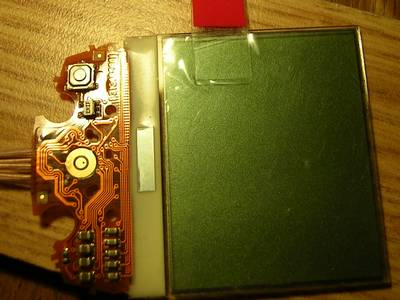
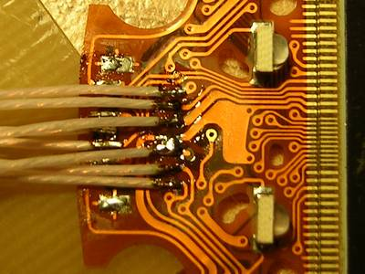
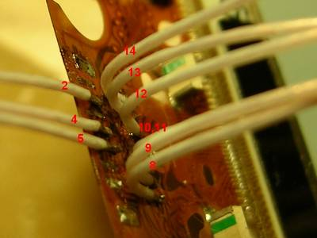

Подключение дисплея от сотового телефона Nokia 7110 к микроконтроллеру AtMega32.
Дисплей от Nokia 7110 я купил достаточно случайно, прельстили его цена (он вроде бы стоил даже дешевле дисплея от 3310), размеры (визуально - раза в полтора больше) и наличие встроенной подсветки. Недавно, копаясь в закромах, наткнулся на него, — и решил-таки с ним разобраться.
Дисплей графический, монохромный, 96x65 точек; интерфейс - последовательный, однонаправленный; контроллер — sed1565 (datasheet).
На гибкой плате присутствуют 4 зелёных светодиода подсветки, какая-то кнопка и концентрические круги - контакты под динамик:

Там был какой-то разъём, я его отпаял и подпаялся проводками:

Контактов всего 14, где какой — понятно из следующего фото:

| Нога | Назначение | Описание |
|---|---|---|
| 1 | Выход датчика температуры (не используется) | |
| 2 | CS | Chip Select |
| 3 | Идёт на контакт под динамик (не используется) | |
| 4 | D/C | Data/Command |
| 5 | SCK | Serial Clock |
| 6 | Идёт на контакт под динамик (не используется) | |
| 7 | Идёт на кнопку (не используется) | |
| 8 | LED- | Минус питания подсветки |
| 9 | LED+ | Плюс питания подсветки |
| 10 | GND | Земля |
| 11 | GND | Земля |
| 12 | VDD | Питание (3в) |
| 13 | SDIN | Serial Data |
| 14 | RESET | Сброс |
Дальше пока не дописал:)
© AHTOXA, 2009.